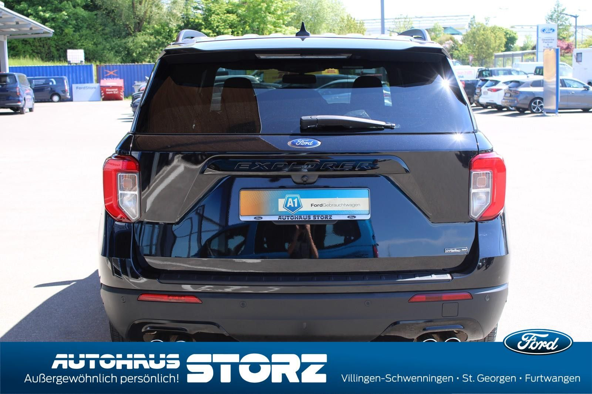

Ford Explorer ST-Line Plug-in-Hybrid 4x4 ALLRAD|7 SIT
45990 PLN
Villingen-Schwenningen
56.748 km
Sonderausstattung
- Metallic-Lackierung
- AHK Abnehmbar
Serienausstattung
- 3.Sitzreihe, Einzelsitze elektr. klappbar (2 Sitzplätze)
- Adaptive Geschwindigkeits-Regelanlage mit Stop&Go-Funktion
- Aktive Geräuschkompensation
- Anhängerkupplung Vorbereitung
- Anti-Blockier-System (ABS)
- Antischlupfregelung (ASR)
- Antriebsart: Allradantrieb
- Audio-Navigationssystem Ford mit AppLink
- Außenspiegel andersfarbig lackiert / Kontrastfarbe
- Außenspiegel elektr. verstell- und heizbar, mit Memory
- Brillenfach in Dachhimmel / Dachkonsole integriert
- Dachreling schwarz
- Diebstahl-Warnanlage
- Einstiegschienen mit Modell-Schriftzug
- Elektr. Bremskraftverteilung (EBD)
- Elektromotor 74 kW (Hybridantrieb)
- Elektron. Stabilitäts-Programm (ESP)
- Fahrassistenz-System: aktiver Park-Assistent Plus, Ein- und Auspark-Funktion und teilautomatisierter Fahrzeugführung
- Fahrassistenz-System: Ausweich-Assistent (Evasive Steer Assistance, ESA)
- Fahrassistenz-System: Bergabfahr-Assistent
- Fahrassistenz-System: Berganfahr-Assistent (Hill-Holder)
- Fahrassistenz-System: Notbrems-Assistent
- Fahrassistenz-System: Post-Collision-System
- Fahrassistenz-System: Pre-Collision-System
- Fensterheber elektrisch vorn + hinten
- FordPass Connect inkl. eCall
- Frontkamera mit Split View
- Frontscheibe heizbar
- Fußmatten Velours mit Ziernähte
- Gepäckraumabdeckung / Rollo
- Getriebe Automatik - Typ: 10R80 (10-Stufen)
- Heckleuchten LED
- Heckspoiler Wagenfarbe
- Induktionsladeschale für mobile Endgeräte
- Innenausstattung: Carbon-Dekor
- Innenspiegel mit Abblendautomatik
- Intelligent Protection System (IPS)
- Intelligenter Geschwindigkeits-Begrenzer
- Isofix-Aufnahmen für Kindersitz
- Karosserie: 5-türig
- KeyFree-System
- Klimaautomatik 2-Zonen
- Kofferraumdeckel / Heckklappe elektr. betätigt (Öffnung, sensorgesteuert)
- Kombiinstrument Digitalanzeige 12,3 Zoll
- Lenkrad (Sport/Leder, ST)
- Lenkrad heizbar
- Lenkrad mit Schaltwippen
- Lenksäule (Lenkrad) elektr. höhen-/längsverstellbar mit Memory
- LM-Felgen
- Mittelkonsole mit Armlehne
- Motor 3,0 Ltr. - 267 kW EcoBoost Hybrid
- My Key (2. Fahrzeugschlüssel programmierbar)
- Nebelscheinwerfer LED
- Panorama-Schiebedach elektr. mit Solar-Reflect
- Parkbremse elektrisch mit Auto-Hold-Funktion
- Parkpilotsystem vorn und hinten
- Power KeyFree-Startfunktion
- Radstand 3025 mm
- Reifendruck-Kontrollsystem
- Reserverad als Notrad
- Rückfahrkamera mit Split View
- Schadstoffarm nach Abgasnorm Euro 6d
- Schadstoffarm nach Abgasnorm Euro 6d-TEMP
- Scheibenwischer mit Regensensor
- Scheinwerfer LED
- Scheinwerfer-Assistent mit Tag-/Nachtsensor
- Servolenkung elektrisch
- Sitz vorn links elektr. verstellbar (10-fach, mit Memory)
- Sitz vorn rechts elektr. verstellbar (8-fach)
- Sitzausstattung: 7-Sitzer
- Sitzbezug / Polsterung: Leder Premium
- Sitze vorn klimatisiert
- Sitzheizung hinten
- Sound-System Bang & Olufsen Play
- Sport-Fahrwerk
- Sportsitze vorn
- Start/Stop-Anlage
- Steckdose (12V-Anschluß) im Koffer-/Laderaum
- Steckdose 230V
- Türverkleidung Leder
- Verglasung hinten abgedunkelt (Privacy Glass)
- Wankneigungskontrolle (Roll Stability Control, RSC)
- Zentralverriegelung mit Fernbedienung
Irrtum und Zwischenverkauf vorbehalten. Fahrzeugstandort Villingen. Tel.: 07721 / 9470-0
